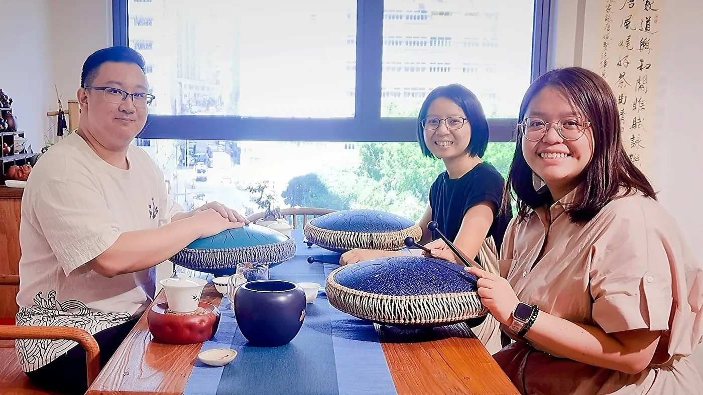

練習方法2 分鐘
只有十分鐘，也可以好好練一件事
晚飯後只剩十分鐘，常讓人覺得不值得打開樂器盒。短練習有用與否，關鍵在於任務是否清楚。十分鐘不適合塞進所有基本功，卻足夠處理一個換指、一句節奏，或一個總是不穩的入口。

想學音樂，可能因為一首曲、一段演奏，或想在工作以外留一件自己的事。這些理由已經足夠作為起點，不需要先以考級證明學習的價值。
選樂器時也要看看家中可出聲的時間、存放空間和身體持握是否舒服。樂器各有需要，不宜只按「哪一種最快學會」決定。
練習方法2 分鐘
晚飯後只剩十分鐘，常讓人覺得不值得打開樂器盒。短練習有用與否，關鍵在於任務是否清楚。十分鐘不適合塞進所有基本功，卻足夠處理一個換指、一句節奏，或一個總是不穩的入口。
長笛2 分鐘
舊笛盒的扣子仍很熟悉，手指卻比記憶遲了一步。重新學長笛，不必由以前最難的作品證明自己。先確認樂器狀況，再用容易的聲音、熟悉的節奏，把身體的記憶一點點接回來。
練習方法2 分鐘
出差、考試或家事讓練習中斷，重新開始時容易想把欠下的時間一次補回來。音樂沒有一份必須當晚還清的時數帳。先用較容易的內容找回節奏，再逐步恢復，通常更能持續。
第一次學、停學多年，或已有其他樂器經驗，都可以先說明目前狀況，再討論課堂安排。